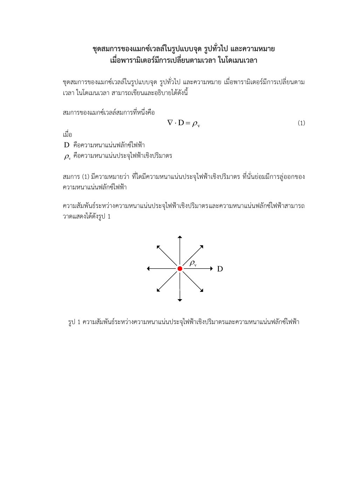
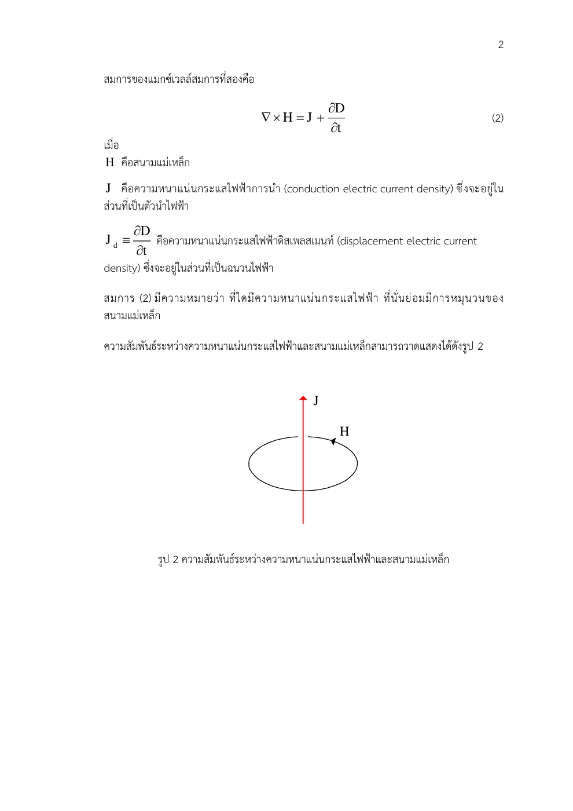
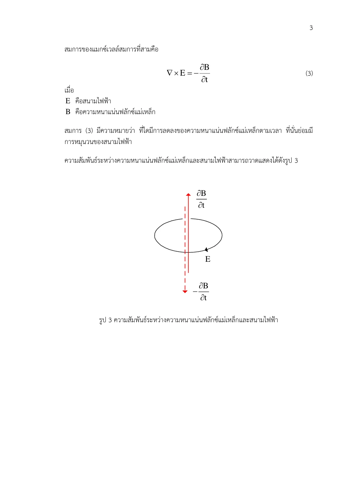
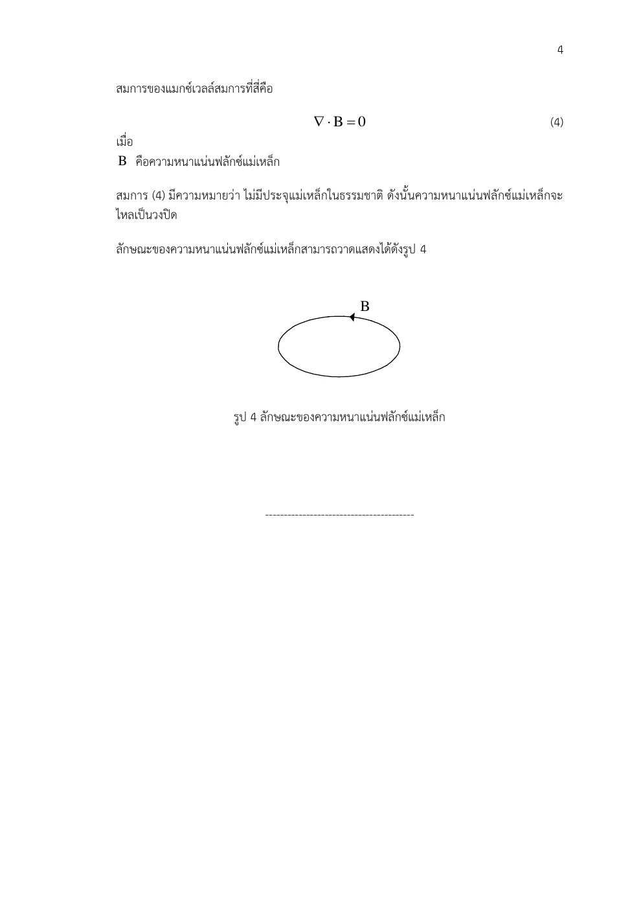
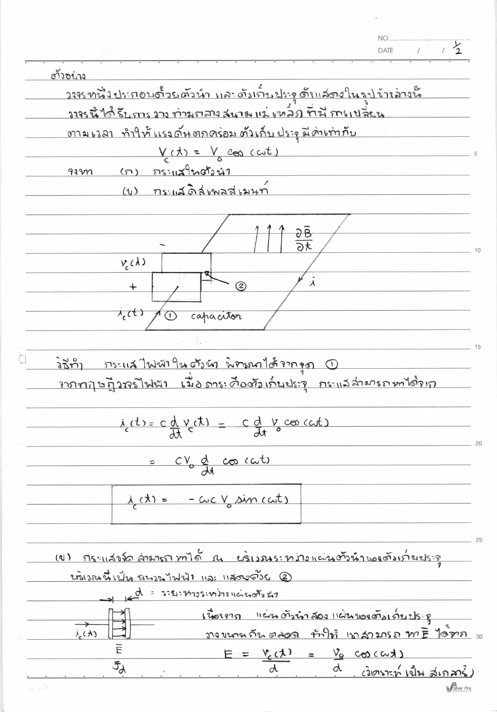
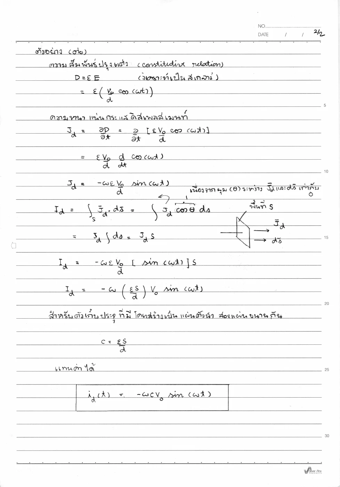
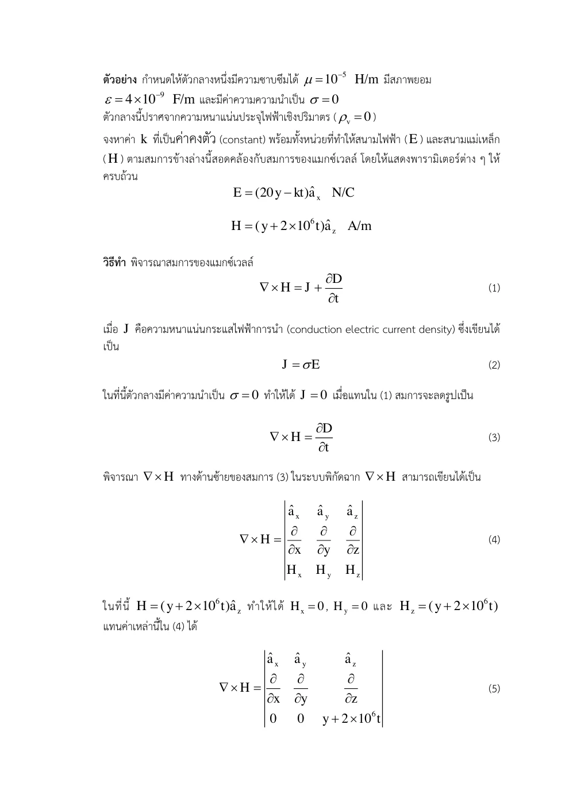
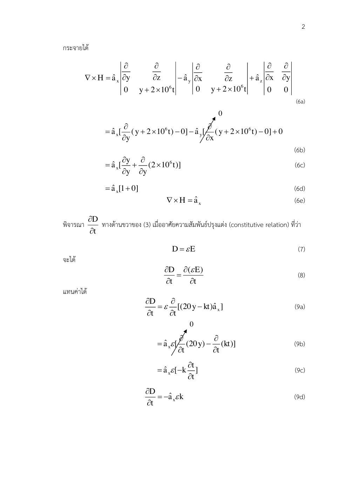
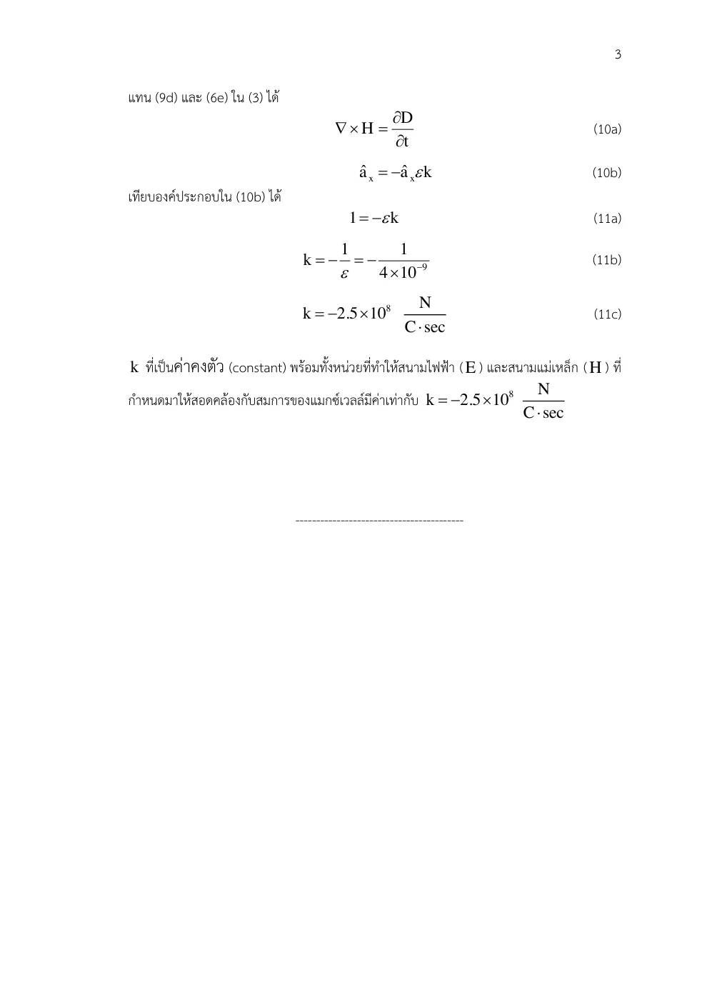

01 ตรวจข้อจำกัดของรูปสถิต
∇ × H=J ⇒ 0=∇ • (∇ × H)=∇ • J
เหตุใดจึงแปลงรูปเช่นนี้? divergence ของ curl เป็นศูนย์เสมอในสนามเรียบ แต่ขณะประจุสะสม continuity ให้ divergence J ไม่ศูนย์
Displacement Current · Hayt §9.2–9.4 D9.3–D9.4; Sadiku §9.3–9.5
ถ้ากระแสไหลเข้าตัวเก็บประจุแต่ไม่มีประจุข้ามช่องว่าง เหตุใดสนามแม่เหล็กต้องไม่ขึ้นกับผิวที่เลือก?
วงแอมแปร์รอบสายที่กำลังชาร์จตัวเก็บประจุสามารถขึงผิวตัดผ่านลวดหรืออ้อมไปในช่องฉนวนได้ ถ้านับเฉพาะประจุที่วิ่งผ่าน ผิวแรกมีกระแสแต่ผิวที่สองไม่มี ทั้งที่วงเดียวกันต้องให้ยอดการวน H เดียวกัน
D ในช่องฉนวนเปลี่ยนเพราะประจุบนแผ่นสะสม อัตราการเปลี่ยนฟลักซ์ D จึงเติมบัญชีกระแสให้ทั้งสองผิวตรงกัน กระแสการกระจัดไม่แปลว่าอิเล็กตรอนทะลุฉนวน แต่เป็นพจน์สนามที่สร้างผลแม่เหล็กและรักษาการอนุรักษ์ประจุ
การแก้ความไม่สอดคล้องนี้ทำให้สนามไฟฟ้ากับแม่เหล็กเลี้ยงการเปลี่ยนของกันและกัน จึงเตรียมพื้นฐานการแพร่คลื่นในบทถัดไป
ขอบเขตแบบจำลอง: ตัวเก็บประจุอุดมคติ σ=0 สนามแผ่นขนาน วัสดุคงที่และละเลยสนามขอบ
เหตุใดจึงแปลงรูปเช่นนี้? divergence ของ curl เป็นศูนย์เสมอในสนามเรียบ แต่ขณะประจุสะสม continuity ให้ divergence J ไม่ศูนย์
เหตุใดจึงแปลงรูปเช่นนี้? แทนแหล่งประจุด้วยเกาส์เพื่อหาพจน์ที่หักล้าง divergence ของกระแส
เหตุใดจึงแปลงรูปเช่นนี้? สลับอนุพันธ์พื้นที่กับเวลาได้เมื่อสนามเรียบ ความสอดคล้องนี้ชี้พจน์ที่ต้องเพิ่ม แต่กฎเต็มยังเป็นกฎสนามพื้นฐาน
เหตุใดจึงแปลงรูปเช่นนี้? Jd มีหน่วย C/m² ต่อ s = A/m² ไม่ใช่ความหนาแน่นประจุ
เหตุใดจึงแปลงรูปเช่นนี้? ใช้สโตกส์และผิวคงที่ ยอดกระแสรวมทำให้ผลไม่ขึ้นกับการขึงผิวที่มีขอบเดียวกัน
เหตุใดจึงแปลงรูปเช่นนี้? C คงที่และเครื่องหมายกระแสเข้าขั้วบวกตามข้อตกลงพาสซีฟ
เหตุใดจึงแปลงรูปเช่นนี้? เลือกปกติจากแผ่นบวกสู่ลบ ใช้สนามแผ่นขนานและวัสดุคงที่
เหตุใดจึงแปลงรูปเช่นนี้? ฐานปกติ dot เท่ากับหนึ่งและสนามสม่ำเสมอจึงคูณพื้นที่ ใช้ C=εS/d หลังแสดงปริพันธ์
เหตุใดจึงแปลงรูปเช่นนี้? ไฟล์จริงมีเลขชี้กำลัง μ ขัดกับฟาราเดย์ ไม่มี k ที่แก้ได้ทั้งหมด อย่าเลือก k จากแอมแปร์แล้วประกาศว่าสอดคล้อง
เหตุใดจึงแปลงรูปเช่นนี้? ต้องแก้ μ เป็น 10⁻⁵ ตาม Hayt D9.4(b) ก่อน แล้วตรวจ divergence D และ B เป็นศูนย์ด้วย
เขียนสูตรทั่วไป → ระบุพิกัดและทิศ → วิเคราะห์ด้วยมือ → ใช้ขอบเขต → ตรวจหน่วย SI และความหมาย
ตัวเก็บประจุในวงจร AC มี i นำ v อยู่ 90° แม้ฉนวนอุดมคติไม่มีกระแสนำ ความสัมพันธ์มาจากอัตราการเปลี่ยนสนาม ไม่ใช่การรั่ว
เมื่อความถี่สูง พจน์นี้สำคัญต่อเสาอากาศและการแพร่พลังงานในฉนวน เป็นสะพานจากการคิดเฉพาะกระแสลวดไปสู่คลื่นแม่เหล็กไฟฟ้า
ลองอธิบายด้วยคำของตนเอง: ผิวสองผิวที่มีขอบวงเดียวกันตัดผ่านลวดกับฉนวน ต่างให้ยอดกระแสรวมเท่ากันอย่างไร?
ปรับความถี่แรงดันโดยคงแอมพลิจูด ทำนายแอมพลิจูดกระแสการกระจัดเพิ่มตามความถี่ ส่วนการนำขึ้นกับ σ
ก่อนปรับ: ทำนายทิศและขนาด · หลังปรับ: อธิบายด้วยสมการและเงื่อนไข
แนวคิดของบทนี้เป็นฐานให้ Set 22
เลขหน้าทั้งหมดนับหน้า PDF รวมปก ตำราเป็นแหล่งตรวจวิธีและนิยาม ไม่ได้กล่าวว่าข้อมูลทุกตัวอย่างตรงกับข้อสอบ บทอธิบายและการพิสูจน์ด้านบนเรียบเรียงเพื่อการสอน
แอมแปร์รูปสถิตขัดกับการอนุรักษ์ประจุเมื่อประจุสะสมเพิ่มขึ้น แมกซ์เวลล์เพิ่มอนุพันธ์ของ D เพื่อให้กระแสรวมสอดคล้องกันผ่านผิวที่ตัดลวดและผ่านช่องว่างตัวเก็บประจุ
อ่าน สไลด์หลัก · หน้า PDF 1 ควบคู่กับคำอธิบายด้านล่าง เพื่อเทียบรูปและลำดับสมการ
กระแสการกระจัดไม่จำเป็นต้องมีประจุอิสระเคลื่อนข้ามช่องฉนวน ถ้า ε เปลี่ยนตามเวลาต้องดิฟเฟอเรนเชียลทั้ง εE การเทียบสองสนามต้องตรวจทั้งเคิร์ลและไดเวอร์เจนซ์ทั้งสี่สมการ
แอมแปร์เต็มรูปจึงเข้ากับการอนุรักษ์ประจุ ข้อระวังเชิงเหตุผล: การมีไดเวอร์เจนซ์เท่ากันไม่ได้ทำให้สองเวกเตอร์เท่ากันเพียงคำตอบเดียว การเลือกพจน์ ∂D/∂t เป็นส่วนของทฤษฎีแมกซ์เวลล์ที่มีการทดลองสนับสนุน
ขอบเขตกระแสผิวทั่วไปเป็นการอ่านเสริม; an12 ชี้ 2 → 1 ในหน้านี้ สไลด์ Set 21 ใช้ K = 0 จึงได้ Ht ต่อเนื่อง
| สัญลักษณ์ | ความหมาย / คำอ่าน | SI |
|---|---|---|
| Jd | ความหนาแน่นกระแสการกระจัด | A/m² |
| Id | กระแสการกระจัด | A |
| σ | สภาพนำไฟฟ้า | S/m |
| D | ความหนาแน่นฟลักซ์ไฟฟ้า | C/m² |
แสดง 33 หน้า
แต่ละรายการเรียบเรียงภาษาไทย พร้อมภาพต้นฉบับหน้าเดียวกัน ภาพคงรูปเวกเตอร์และลำดับการพิสูจน์ของอาจารย์ เปิดเฉพาะหน้าที่ต้องการอ่าน
| สัญลักษณ์ | คำอ่านและความหมาย | SI |
|---|---|---|
| x,y,z; r,ρ; θ,ϕ | เอ็กซ์ วาย แซด; อาร์ โร; ทีตา ไฟ · พิกัดและมุม | m; m; rad |
| E, D; H, B | อี ดี; เอช บี · สนามและฟลักซ์ไฟฟ้า/แม่เหล็ก | V/m, C/m²; A/m, T |
| J, K; ρv, ρs | เจ เค; โรซับวี โรซับเอส · กระแสปริมาตร/ผิวและประจุปริมาตร/ผิว | A/m², A/m; C/m³, C/m² |
| ε, μ, σ; εr, μr | เอปไซลอน มิว ซิกมา · สภาพยอม ความซาบซึมได้ สภาพนำ; ค่าสัมพัทธ์ | F/m, H/m, S/m; ไม่มีหน่วย |
| P, χe | พี ไคซับอี · โพลาไรเซชันและความไวทางไฟฟ้า | C/m², ไม่มีหน่วย |
| I, Q, q; V, V0 | ไอ คิว คิว; วี วีซับศูนย์ · กระแส ประจุรวม/ย่อย ศักย์/แรงดันกำหนด | A, C, C; V, V |
| C, W; S, A; d,L | ซี ดับเบิลยู; เอส เอ; ดี แอล · ความจุ พลังงาน พื้นที่ ระยะห่าง ความยาว | F, J; m², m²; m,m |
| A, Φ | เอ ไฟตัวใหญ่ · ศักย์เวกเตอร์แม่เหล็กและฟลักซ์ | Wb/m, Wb |
| ω, f, λ; k, η | โอเมกา เอฟ แลมบ์ดา; เค อีตา · ความถี่เชิงมุม ความถี่ ความยาวคลื่น เลขคลื่น อิมพีแดนซ์ | rad/s, Hz, m; rad/m, Ω |
| v, t; dl, ds, dv | วี ที; ดีแอล ดีเอส ดีวี · ความเร็ว เวลา ส่วนย่อยความยาว ผิว ปริมาตร | m/s, s; m,m²,m³ |
| an, j; ∇, ∇2 | เอซับเอ็น เจ; เดล ลาปลาเซียน · เวกเตอร์หน่วย หน่วยจินตภาพ ตัวดำเนินการพื้นที่ | ไม่มีหน่วย; ต่อระยะทางและระยะทาง² |
| Es, Hs | อีซับเอส เอชซับเอส · เฟสเซอร์เชิงอวกาศ | V/m, A/m |
องค์ประกอบสนามมีหน่วยเดียวกับสนาม ตัวห้อย t,n คือสัมผัสและปกติ ตัวห้อย 1,2 คือตัวกลาง ไพรม์ระบุแหล่งกำเนิด a ที่เป็นค่าคงตัวจากการอินทิเกรตมีหน่วยตามสมการที่ใช้; a ที่เป็นเวกเตอร์หน่วยไม่มีหน่วย
ตัวเก็บประจุแผ่นขนานพื้นที่ S ระยะ d และสภาพยอม ε คงที่ รับแรงดัน vc(t) = V0 cos ωt จงพิสูจน์ว่า i(t) ในลวดเท่ากับ Id(t) ในฉนวน เลือกปกติผิวตามสนามจากขั้วบวกสู่ขั้วลบ
ALL-Q09 · ตัวเก็บประจุ · เรียบเรียงจากไฟล์จริง · Set 21 เฉลยลายมือ · หน้า PDF 1 · ชุดโจทย์เดิม · หน้า PDF 26 · Hayt Figure 9.3 · ตัวเก็บประจุ · หน้า PDF 300 · Sadiku §9.4 สองผิวตัวเก็บประจุ · หน้า PDF 390
ทำไมจึงทำขั้นนี้? เริ่มจากความจุและสูตร Id ที่สัมพันธ์กับ D
ทำไมจึงทำขั้นนี้? C คงที่และเครื่องหมายกระแสเข้าขั้วบวกตามข้อตกลงพาสซีฟ
ทำไมจึงทำขั้นนี้? เลือกปกติจากแผ่นบวกสู่ลบ ใช้สนามแผ่นขนานและวัสดุคงที่
ทำไมจึงทำขั้นนี้? ฐานปกติ dot เท่ากับหนึ่งและสนามสม่ำเสมอจึงคูณพื้นที่ ใช้ C=εS/d หลังแสดงปริพันธ์
หน่วย F × s⁻¹ × V = A แม้ไม่มีประจุอิสระข้ามฉนวน การเปลี่ยน D ทำให้แอมแปร์ให้คำตอบเดียวกันสำหรับทั้งสองผิว
ทำไมจึงทำขั้นนี้? อินทิเกรตกระแสหนาแน่นผ่านผิวได้กระแส A เท่ากับในลวด
ไฟล์ต้นฉบับพิมพ์ μ=105 H/m, ε=4×10−9 F/m, σ=0, ρv=0, E=(20y−kt) ax V/m, H=(y+2×106t) az A/m จงตรวจทุกสมการและพิจารณาว่ามี k ที่ทำให้สอดคล้องทั้งหมดหรือไม่ แล้วเทียบฉบับตำรา
ALL-Q10 · ตรวจข้อมูล μ ขัดแย้ง · เรียบเรียงจากไฟล์จริง · ALL-Q10 · ข้อมูล μ ที่พิมพ์ · หน้า PDF 28 · Set 21 · เฉลยที่เกี่ยวข้อง · หน้า PDF 1 · Hayt D9.4(b) · μ=10⁻⁵ · หน้า PDF 304
| ax | ay | az |
| ∂∂x | ∂∂y | ∂∂z |
| Ex | Ey | Ez |
| ax | ay | az |
| ∂∂x | ∂∂y | ∂∂z |
| Hx | Hy | Hz |
ทำไมจึงทำขั้นนี้? ตรวจทั้งกฎเคิร์ลและเกาส์ ไม่เลือก k จากเพียงสมการที่ให้คำตอบได้
ทำไมจึงทำขั้นนี้? สองข้างไม่เท่ากัน และไม่ขึ้นกับ k จึงไม่มี k ที่แก้ข้อมูลฉบับนี้ได้ครบ
ทำไมจึงทำขั้นนี้? ค่านี้ทำให้แอมแปร์เป็นจริง แต่ยังแก้ฟาราเดย์ที่ขัดแย้งไม่ได้ เกาส์ทั้งสองเป็นศูนย์เพราะอนุพันธ์ตาม x,z เป็นศูนย์
ทำไมจึงทำขั้นนี้? สนาม E มีองค์ประกอบ x แต่ฟังก์ชันไม่ขึ้นกับ x จึง divergence ศูนย์ ไม่ใช่ดิฟเฟอเรนเชียลตาม y
ทำไมจึงทำขั้นนี้? B มีองค์ประกอบ z แต่ไม่ขึ้นกับ z จึงไม่มีแหล่งแม่เหล็ก ทั้งสองกฎเกาส์ผ่านโดยไม่แก้ข้อขัดแย้งของฟาราเดย์
ทำไมจึงทำขั้นนี้? เมื่อแก้เลขชี้กำลังเป็น −5 ทั้งสี่สมการจึงสอดคล้องสำหรับ k ข้างต้น แยกฉบับนี้ในคลัง ห้ามแก้ข้อมูลต้นฉบับโดยไม่แจ้ง
ให้ μ = 10−5 H/m, ε = 4 × 10−9 F/m, σ = 0, ρv = 0 และ E = (20y − kt)ax V/m, H = (y + 2 × 106t)az A/m จงหาค่า k และหน่วยที่ทำให้ทั้งสี่สมการแมกซ์เวลล์สอดคล้องกัน
ฉบับแก้เลขชี้กำลัง μ ตาม Hayt D9.4 · ต่างจากต้นฉบับ ALL-Q10 · Set 21 เฉลย · หน้า PDF 1 · Hayt D9.4(b) · หน้า PDF 304
| ax | ay | az |
| ∂∂x | ∂∂y | ∂∂z |
| Ex | Ey | Ez |
| ax | ay | az |
| ∂∂x | ∂∂y | ∂∂z |
| Hx | Hy | Hz |
ทำไมจึงทำขั้นนี้? กำหนดตัวกลางและสมการทั้งสี่ก่อนหา k
สมการนี้สอดคล้องอยู่แล้วและยังไม่กำหนด k
ทำไมจึงทำขั้นนี้? ฟาราเดย์เป็นการตรวจข้อมูล μ โดยไม่พึ่ง k
ทำไมจึงทำขั้นนี้? แอมแปร์กำหนด k จากอนุพันธ์ E ตามเวลา
kt ต้องมีหน่วยเดียวกับ E จึงให้ k เป็น V/(m·s) อย่าเลือกคำตอบด้วยการตรวจเคิร์ลเพียงสมการเดียว
ทำไมจึงทำขั้นนี้? เกาส์ทั้งสองยังต้องตรวจ ไม่พอเพียงเคิร์ลตรง
ตัวกลาง εr = 5 มี E = 0.9 cos[1.257 × 10−6(3 × 108t − z√5)]ax MV/m จงหาแอมพลิจูดของ Jd
Drill ตำรา: เลือกส่วนที่อยู่ในขอบเขต · Hayt D9.3(c) · หน้า PDF 302 · Set 21 · สูตรพื้นฐานที่เกี่ยวข้อง · หน้า PDF 8
ทำไมจึงทำขั้นนี้? เขียน Jd=ε∂E/∂t แล้วแปลง MV/m เป็น V/m ก่อนคูณ
ทำไมจึงทำขั้นนี้? สัมประสิทธิ์ของ t ภายในเฟสคือ ω ไม่ใช่ค่าคงตัวเชิงอวกาศ
ทำไมจึงทำขั้นนี้? อนุพันธ์ cos ให้ −sin คูณ chain rule ω
แอมพลิจูดเป็นค่าบวก 15.0 mA/m² เครื่องหมายลบของไซน์บอกเฟสของสนามเต็ม ไม่ใช่แอมพลิจูดติดลบ
ทำไมจึงทำขั้นนี้? แอมพลิจูดใช้ขนาดบวก เครื่องหมายลบเป็นข้อมูลเฟส
ให้ ε = 10−11 F/m, μ = 10−5 H/m, J = 0 และ Bx = 2×10−4 cos(105t) sin(10−3y) T จงหา E จากแอมแปร์–แมกซ์เวลล์ โดยให้ส่วนสนามสถิตเป็นศูนย์ และหา Φ ผ่านผิว x=0, 0≤y≤40, 0≤z≤2 โดยปกติ +ax
Drill ตำรา: คงค่าตามต้นฉบับ · Hayt D9.1 · หน้า PDF 297 · Set 20 · สูตรพื้นฐานที่เกี่ยวข้อง · หน้า PDF 11
| ax | ay | az |
| ∂∂x | ∂∂y | ∂∂z |
| Hx | Hy | Hz |
ทำไมจึงทำขั้นนี้? โจทย์ให้ B จึงต้องใช้ B=μH ก่อนหาเคิร์ลและเชื่อมกับ E
ทำไมจึงทำขั้นนี้? เคิร์ล H เลือกอนุพันธ์ตาม y จากนั้นอินทิเกรตเวลาและกำหนดส่วนสถิต
ทำไมจึงทำขั้นนี้? ฟลักซ์เป็นปริพันธ์ผิวของ B ให้ขอบ z และ y ถูกต้อง
ฟลักซ์มีแอมพลิจูดประมาณ 3.19957×10−4 Wb สูตร E ที่ได้มีเฉพาะแนว z และต้องใส่เวกเตอร์ az; สอดคล้องกับฟาราเดย์เพราะความถี่และค่าคงตัวตำแหน่งตรงกับ ω√(με)
ทำไมจึงทำขั้นนี้? ตรวจมิติ Wb และความสัมพันธ์เลขคลื่นกับ ω√με
ส่วนอ่านเสริมจาก Hayt บท 8 ไม่สุ่มเข้าชุดจำลองสอบ: ตัวกลาง A อยู่ x<0 มี μA=5 µH/m ตัวกลาง B อยู่ x>0 มี μB=20 µH/m ให้ K=150ay−200az A/m และ HA=300ax−400ay+500az A/m จงหา HB
อ่านเสริม: ไม่สุ่มเป็นข้อสอบ · Hayt D8.8 · หน้า PDF 269 · Set 18 · สูตรพื้นฐานที่เกี่ยวข้อง · หน้า PDF 1
กำหนดบริเวณ 1 เป็น A และ 2 เป็น B ปกติร่วม 2 → 1 จึงเป็น −ax
ทำไมจึงทำขั้นนี้? กำหนดปกติ 2 ไป 1 ให้สมการกระแสผิวมีเครื่องหมายตรงกัน
ทำไมจึงทำขั้นนี้? B ปกติต่อเนื่องจึงให้ H ปกติเปลี่ยนตามอัตราส่วน μ
ทำไมจึงทำขั้นนี้? ผลคูณไขว้กับปกติให้สมการส่วน y,z ของ H กระโดดตาม K
ตรงกับตำรา ต้นฉบับใช้คำว่า permittivity แต่หน่วย µH/m บ่งว่าเป็น permeability; สไลด์ Set 21 เน้นกรณี K=0
ทำไมจึงทำขั้นนี้? รวมเวกเตอร์และตรวจคำตอบโดยแทนกลับสมการรอยต่อ
เลื่อนพารามิเตอร์เพื่อดูแนวโน้มและเครื่องหมาย แล้วกลับไปพิสูจน์ด้วยสูตรตั้งต้นในตัวอย่าง
ตัวอย่างเพิ่มเติม โน้ต และภาพลายมือแสดงเป็นหน้าต้นฉบับเรียงลำดับ ใช้คำอธิบายและวิธีทำในบทนี้ประกอบ
เกาส์ไฟฟ้า: ประจุอิสระเป็นแหล่งของ D

แอมแปร์–แมกซ์เวลล์: J และการเปลี่ยน D สร้างการวน H

ฟาราเดย์: การเปลี่ยน B สร้างการวน E พร้อมเครื่องหมายเลนซ์

เกาส์แม่เหล็ก: ฟลักซ์สุทธิผิวปิดเป็นศูนย์ในแบบจำลองไร้ขั้วเดี่ยว

กระแสลวดจาก C dvc/dt ได้ −ωCV0 sin ωt ตามทิศอ้างอิงในรูป

ในช่องว่างหา E,D,Jd แล้วอินทิเกรตผิว ได้ Id เท่ากระแสลวด

เขียนแมกซ์เวลล์เต็มรูปและเริ่มตรวจเคิร์ล E

ฟาราเดย์สอดคล้อง; เคิร์ล H = ax เทียบกับ −εk ax

ได้ k = −1/ε พร้อมหน่วย และตรวจไดเวอร์เจนซ์ทั้งสองเป็นศูนย์
